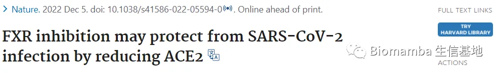
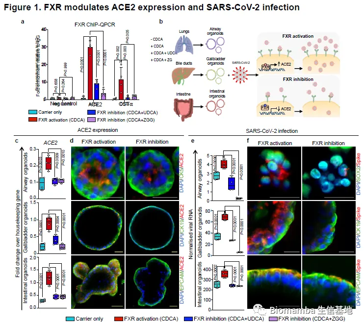
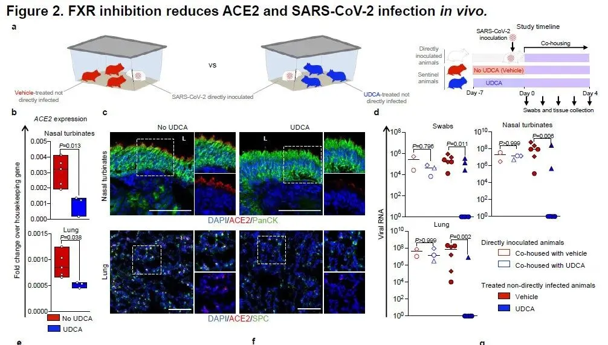
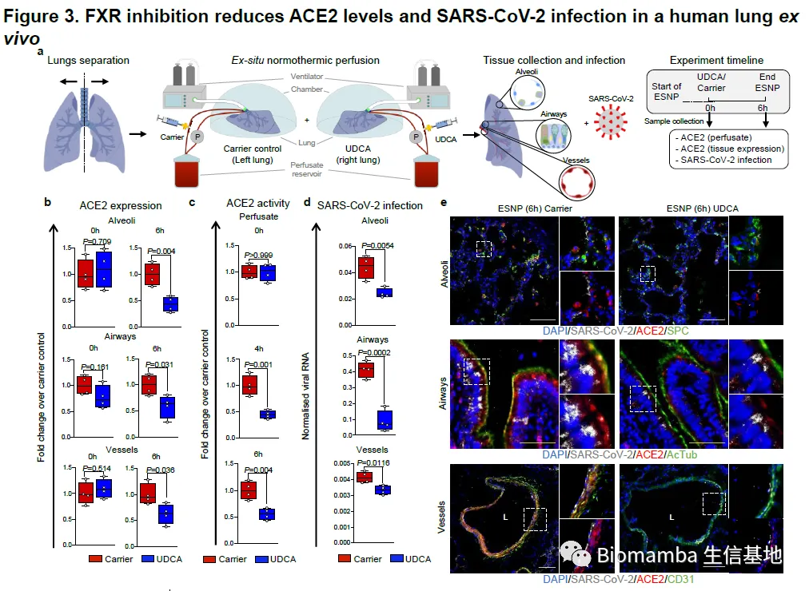
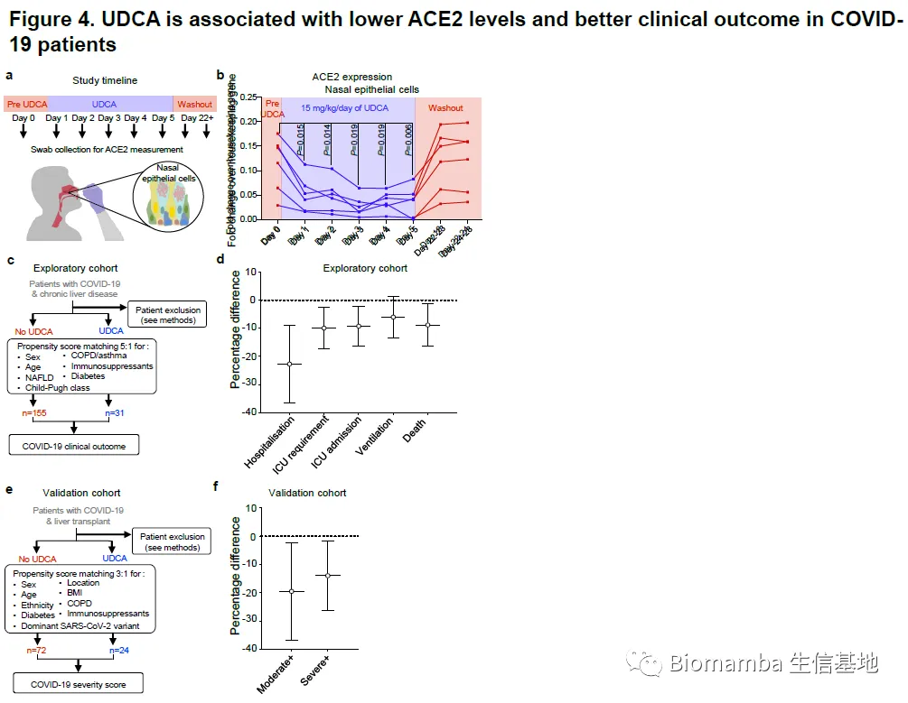

浅聊Nature发表的“新冠终结者”—熊去氧胆酸
原文：https://mp.weixin.qq.com/s?__biz=MzAwMzIzOTk5OQ==&mid=2247495643&idx=1&sn=e2bf17757dd4fa770cafc4e8d79983c3&chksm=9b3c968bac4b1f9d29460c867a1f88c95e8fd75f3ab9a3dd6ea90b9fef110ec39d5007cd457d#rd 合集：文献速递 / 漫谈胡侃
写在前面

这几天有一篇发表在《Nature》题为“FXR inhibition may protect from SARS-CoV-2 infection by reducing ACE2”[1]的文章引起了大家广泛的关注。主要内容是熊去氧胆酸(ursodeoxycholic acid, UDCA)可能有预防新冠的作用 。很多媒体称其是新冠终结者、可以预防所有冠状病毒，我认为这种说法为时尚早 。
研究内容
具体来了解一下，UDCA与z-guggulsterone (一种植物甾醇，ZGG)可以通过抑制法尼酯X受体(farnesoid X receptor, FXR)的表达从而间接抑制血管紧张素转化酶2(angiotensinconvertingenzyme2,ACE2)的表达。而ACE2正是新冠病毒COVID-19进入人体的靶点 ，其可以与冠状病毒表面的刺突蛋白 结合。该项研究主要证明了UDCA与ZGG可以减少仓鼠及人体肺部、胆管、肠道中的FXR表达，从而一定程度上阻断阻断新冠病毒感染 的作用并对新冠患者的预后提供帮助。
作者首先通过CHIP-QPCR证明了在小鼠体内FXR会结合在ACE2基因的启动子部分(Figure1 a-b)，正向调控ACE2基因的表达(Figure 1c)。而通过UDCA和ZGG对FXR的抑制会导致感染小鼠体内肺部、胆管、肠道 的新冠病毒RNA含量与刺突蛋白的减少(Figure 1e-f & Figure 2)。


显然作者觉得在实验动物的胆管与肠道中的结果说服力不足，因此使用了一对未被接受的待移植人类肺脏 ，在体外进行灌注与机械通气。经UDCA的灌注后可以显著降低肺实质、肺血管、气道中的ACE2 表达和减少灌注液中的ACE2活性。在病毒侵染实验中也没有让大家失望，新冠病毒的RNA含量确实在UDCA灌注的肺中降低(Figure 3)。在体外实验中几乎下结论：通过UDCA的补给可以抑制FXR信号并下调肺实质、支气管、血管、胆囊、肠道中的ACE2，从而起到减少COVID-19感染的作用。

再看看体内实验，由于UDCA已经是上市多年的非处方药(原被批用于原发性胆管炎的治疗)，因此其安全性和副作用方面的顾虑基本可以忽略。因此作者招募了8名志愿者，经15mg/kg/d的UDCA补给5天后。鼻拭子(主要是上皮细胞)中的ACE2含量明显降低（Figure4 a-b）。由于拿新冠病毒感染这八名志愿者不太符合伦理，而新冠病毒中具有慢性肝病的患者是一类很好的研究对象；作者通过数据挖掘 发现接受过UDCA治疗的新冠患者与未接受UDCA者相比，即使在排除其他干扰因素(性别、年龄、糖尿病等)后也仍能表现出更好的预后(Figure 4)。

我来胡侃两段
首先，新冠药物研究具有新进展固然可喜可贺。毕竟目前来说新冠治疗的临床方案中，地塞米松(dexamethasone)、瑞德西伟(remdesivir), 莫努匹韦(molnupiravi)、利托那韦(nirmatrelvir)等在实际应用中能够改善并患者特定患者的部分症状，但目前这些药物都还不能称为新冠病毒的"特效药 "。所以最佳的应对策略还是预防 ，预防手段目前除了灭活疫苗与RNA疫苗外也几乎没有其他方案，而灭活疫苗和腺病毒载体疫苗阵营在有效性和安全性方面吵得是不可开交。因此该研究中的UDCA作为一种非处方类化药，相比于疫苗这类生物制剂而言具有安全性高、可口服、可长期使用、易于储存(疫苗可是需要通过冷链运输的)、更经济、耐受性低等优点 。由于是抑制冠状病毒依赖刺突蛋白入侵，那么理论上UDCA可以应对目前COVID-19的所有变种。况且这是一种专利期已过的非处方药，其可以省略临床的前两期而直接进行三期临床研究 。那么UDCA一但在临床中被证明可以阻断新冠病毒的入侵，那么它将会拥有广阔的应用前景。 但即使这项高水平研究令大家十分兴奋，但我个人认为现在就声称UDCA是新冠终结者还为时尚早 。作者也承认，由于该研究不涉及真正的临床试验、缺少双盲，因此现阶段并不建议 在新冠患者身上直接使用UDCA。另外，UDCA的原理是阻断新冠病毒进入人体。其虽然能一定程度上改善患者预后，但不能抑制病毒的复制 。因此这种药物并不能用作新冠感染治疗的主力军，更适合用作预防药物。另一个需要考虑的方面是，目前发表在PubMed中的新冠相关研究高达32万篇[2]，而目前能用于临床的药物屈指可数；即使是发表在《Nature》上的基础研究 ，在看到完整的三期临床试验数据前，我都建议对UDCA保留观望态度(当然比某些发了四区文章声称有新冠预防作用而大捞特捞的药物好上千倍万倍)。毕竟原来氯喹、羟氯喹、瑞德西伟、各类抗病毒中成药都曾短暂的当过一段时间的新冠终结者，而现它们的现状无需多言。参考： [1]Brevini T, Maes M, et. al. FXR inhibition may protect from SARS-CoV-2 infection by reducing ACE2. Nature. 2022 Dec 5. [2]https://pubmed.ncbi.nlm.nih.gov/?term=COVID+19

如何联系我们
 公众号后台消息更新不及时，超过48h便不允许回复读者消息，这里给大家留一下领取资料、免费服务器的微信号 ，方便各位随时交流、提建议（由助理接待）。此外呼声一直很高的交流群 也建好了，欢迎大家入群讨论：永久免费的千人生信、科研交流群
公众号后台消息更新不及时，超过48h便不允许回复读者消息，这里给大家留一下领取资料、免费服务器的微信号 ，方便各位随时交流、提建议（由助理接待）。此外呼声一直很高的交流群 也建好了，欢迎大家入群讨论：永久免费的千人生信、科研交流群
大家可以阅读完这几篇之后添加给生信入门初学者的小贴士 如何搜索公众号过往发布内容

 您点的每个赞和在看，我都认真当成了喜欢
您点的每个赞和在看，我都认真当成了喜欢